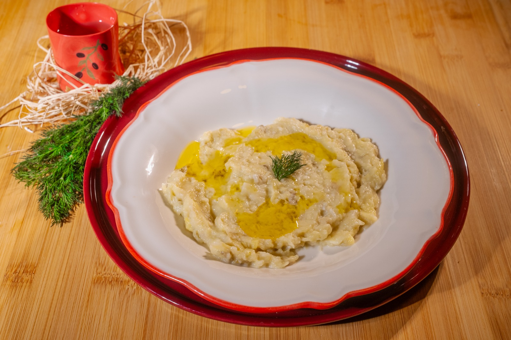
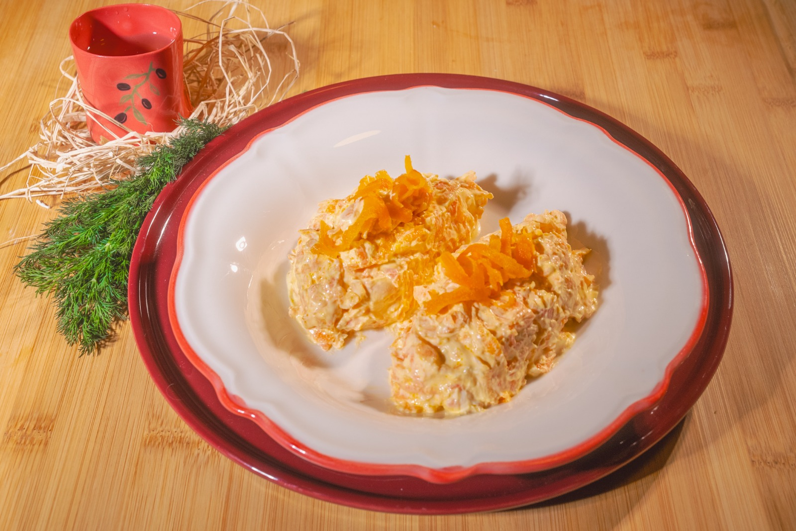
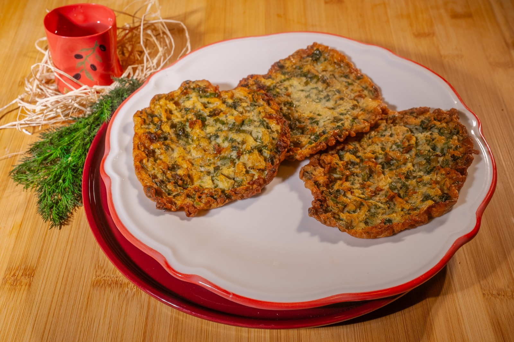
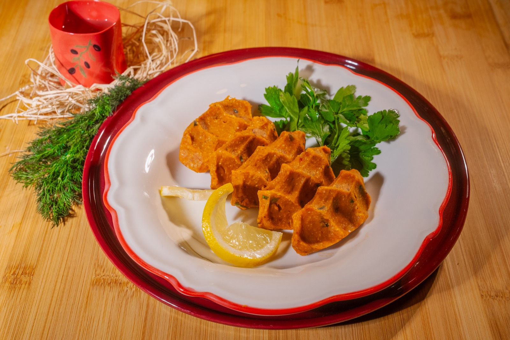
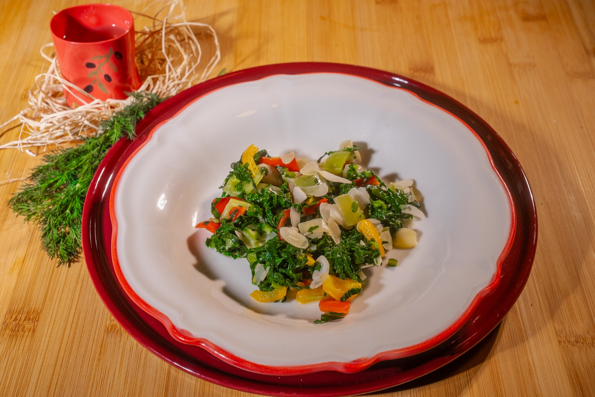
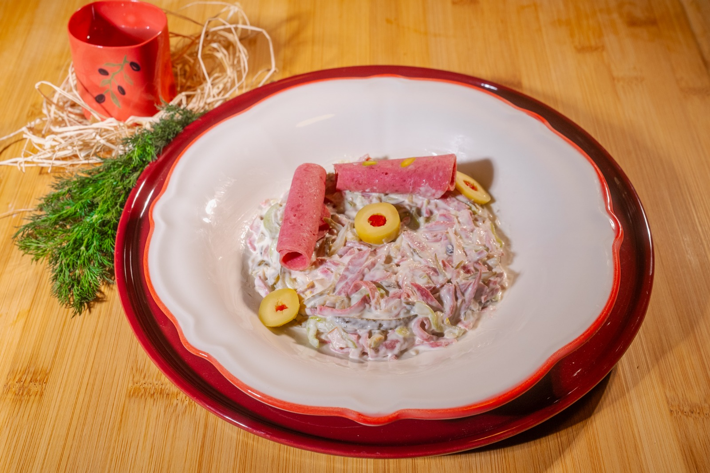
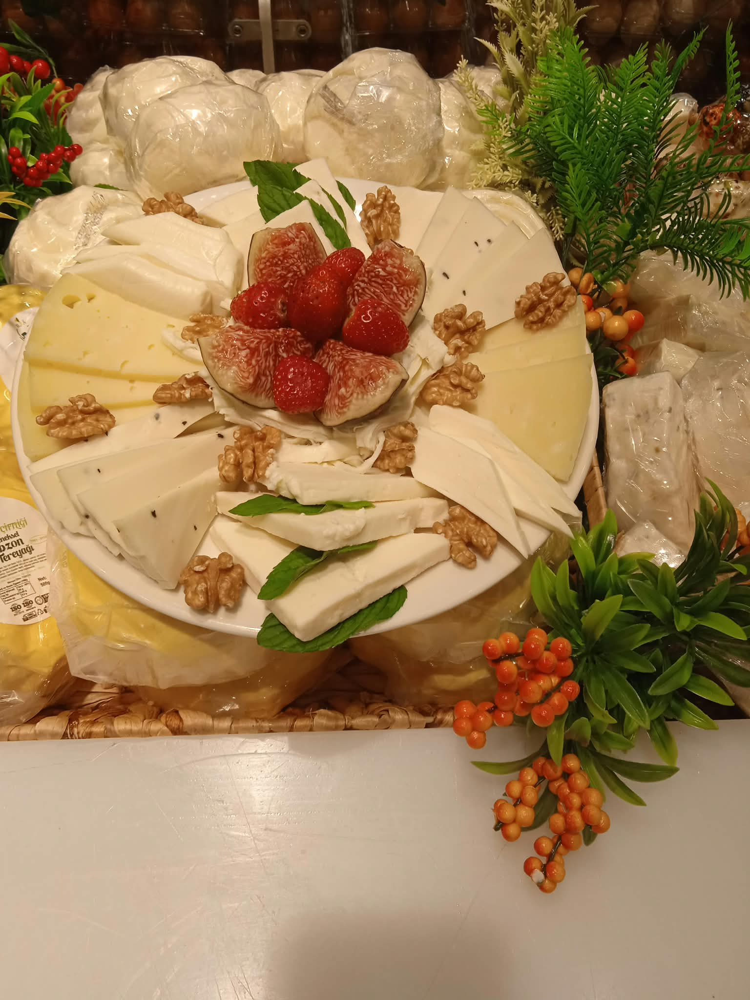
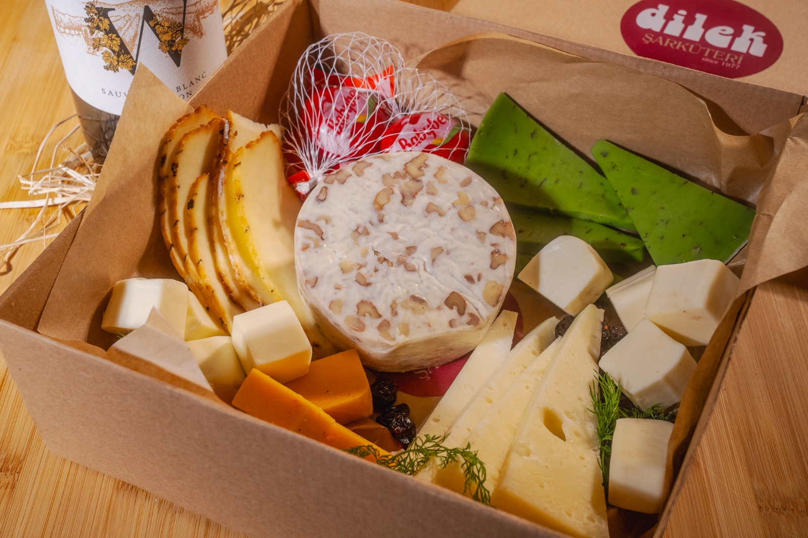
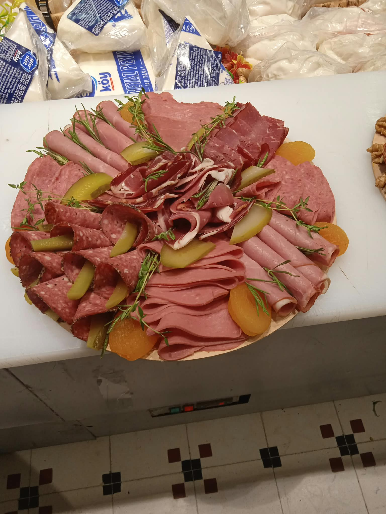
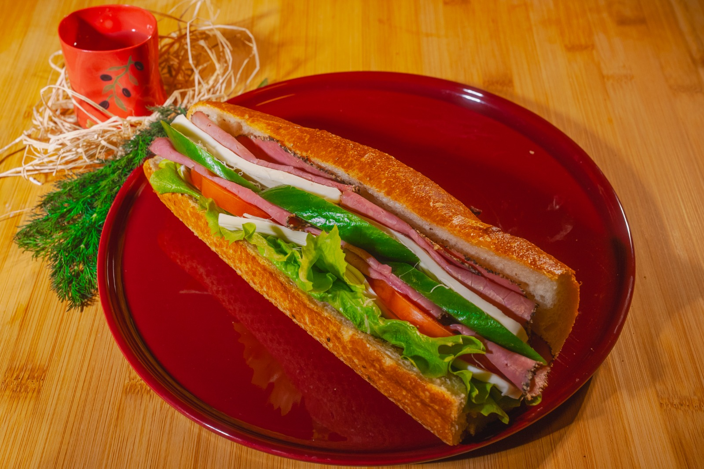

Patlıcan Salatası
Köz patlıcan, sarımsak ve bolca zeytinyağı. Kilo ile.
Katalog
Bin çeşidi aşan rafın üç ana başlığı: meze, peynir, şarküteri. Aşağıdaki çeşitler tezgâhta düzenli bulunan ürünlerden bir seçki.
Her gün mutfakta hazırlanır

Köz patlıcan, sarımsak ve bolca zeytinyağı. Kilo ile.

Rendelenmiş havuç, yoğurt ve ceviz. Kilo ile.

Kabak, dereotu ve peynirle. Adet ile.

Etsiz, limon ve maydanozla. Kilo ile.

Mevsim yeşilliği, badem ve turşu biberle. Kilo ile.

Salam, turşu ve mayonezle. Kilo ile.
Tezgâhta ayrıca
Üreticisi bilinen çeşitler

Sekiz-on çeşit peynir, ceviz ve mevsim meyvesiyle. Kişi sayısına göre hazırlanır.

Beyaz, kaşar, otlu ve taze incirle. Sabah sofrası için.

Hediyeye uygun kraft kutuda cevizli, otlu ve olgunlaşmış çeşitler.
Rafta bulunan çeşitler
İstediğiniz kalınlıkta dilimlenir

Pastırma, füme dana, salam ve sucuk; turşu ve kuru kayısıyla.

Baget ekmek, füme dana, kaşar ve mevsim yeşilliği. Günlük hazırlanır.
Tezgâhta ayrıca
Kooperatif ve küçük üretici
Peynir ve mezenin yanında rafın büyük kısmı kahvaltılıklara ayrılmış. Ev yapımı reçeller, zeytinler ve yağlar çoğunlukla küçük üreticilerden ve kadın kooperatiflerinden geliyor.
Zeytin Çeşitleri
Gemlik, kırma, yeşil ve baharatlı çeşitler.
Ev Reçelleri
Mevsime göre incir, kayısı, bergamot, vişne.
Zeytinyağı & Bal
Soğuk sıkım yağlar, süzme ve petek bal.
Tahin & Pekmez
Susam tahini, üzüm ve dut pekmezi.
Kuruyemiş
Ceviz, antep fıstığı ve kuru meyveler.
Turşu & Sos
Ev turşuları ve geniş sos çeşidi.
Tezgâhtaki çeşit her gün değişiyor. Fiyat ve stok için arayın, ne aradığınızı söyleyin — genellikle vardır.